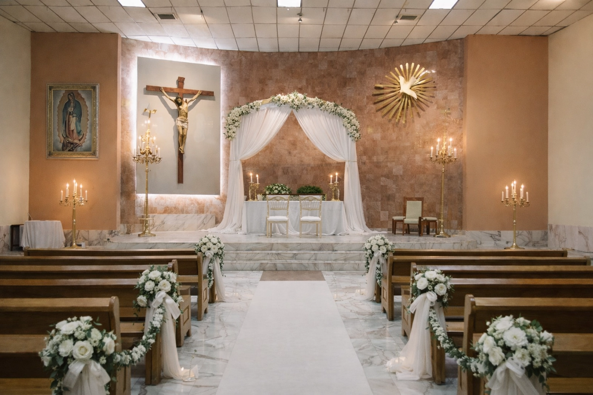
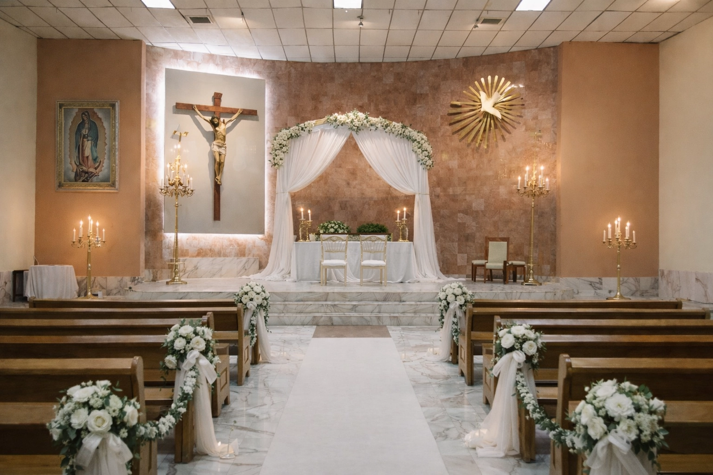
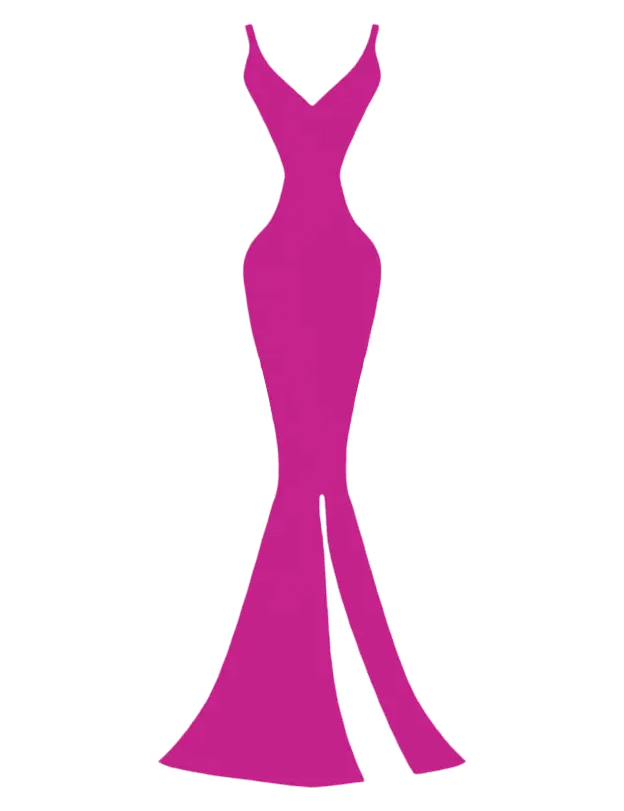
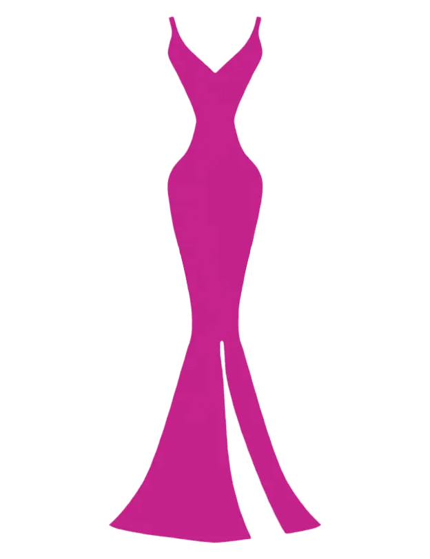

Ceremonia Religiosa
Hay momentos que se quedan grabados en el alma. Queremos que seas testigo de nuestro "Sí" ante Dios en la Parroquia Espíritu Santo.
17:00 hrs | Parroquia del Espíritu Santo
 Ver UbicaciónNos casamos
07 . 03 . 2026
Villa la Moraleja, Dgo.
Desliza
Tenemos el gusto de invitarte a este día tan importante de nuestras vidas
Queremos compartir contigo la felicidad de nuestra unión
Esperamos contar con tu presencia
Un momento inolvidable
.webp)
.webp)
.webp)
.webp)
.webp)
.webp)
Hay momentos que se quedan grabados en el alma. Queremos que seas testigo de nuestro "Sí" ante Dios en la Parroquia Espíritu Santo.
17:00 hrs | Parroquia del Espíritu Santo
 Ver UbicaciónCon el atardecer como testigo, firmaremos el compromiso de amarnos siempre en los jardines de nuestra sede.
18:30 hrs | Villa la Moraleja
 Ver Ubicación
Ver Ubicación
¡Que comience la fiesta! Nos vemos para bailar, reír y celebrar que el amor siempre gana.
19:00 hrs | Villa la Moraleja
 Ver Ubicación
Ver Ubicación
Formal
 

Mujeres: Vestido, en la siguiente paleta de colores:
El mejor regalo es la alegría y el honor de compartir con ustedes este día tan especial.
Si es su deseo obsequiarnos algo adicional les recomendamos la siguiente opción:

Cómplices en cada risa, cada locura y muy pronto en nuestro "Sí".


Hemos preparado un día lleno de momentos especiales. Aquí tienes el programa completo.
Por favor, confirma tu asistencia antes del 25 de enero de 2026.